Hallo, ich bin Minjun!
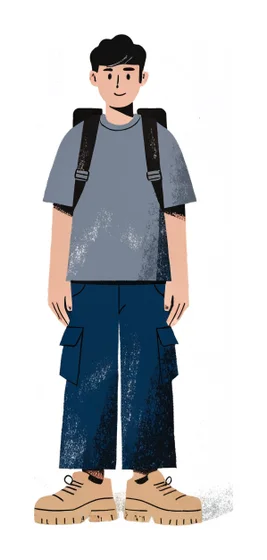
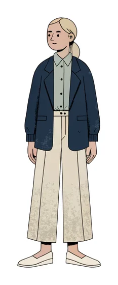
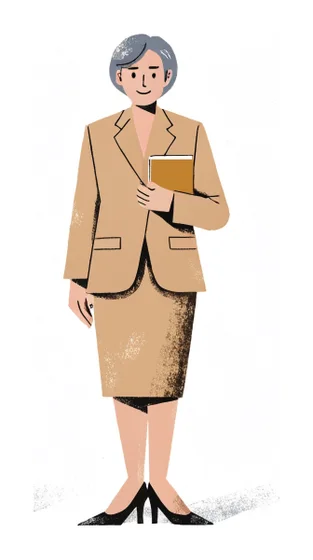
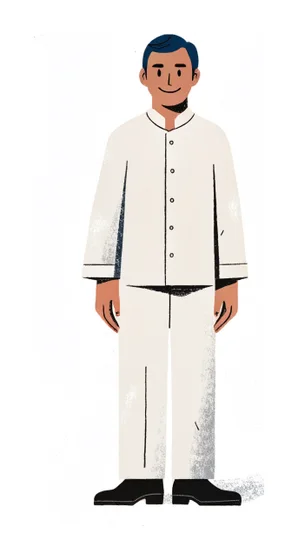
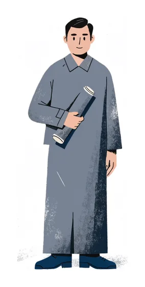
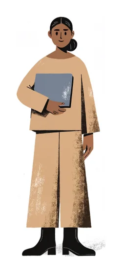
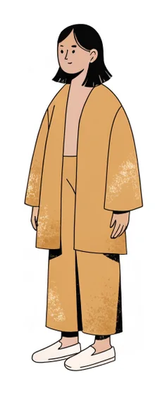
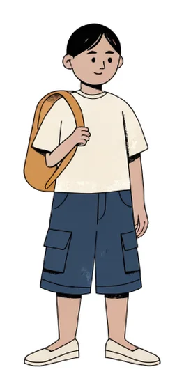
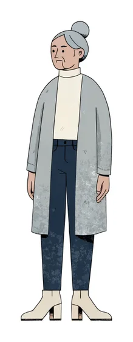
Lernziele · 이번 과에서 할 수 있게 되는 것
인사하고 작별 인사를 할 수 있다.
Ich kann jemanden begrüßen und mich verabschieden.
이름·출신·사는 곳·언어로 나를 소개할 수 있다.
Ich kann mich vorstellen: Name, Herkunft, Wohnort, Sprachen.
다른 사람에게 같은 정보를 물어볼 수 있다.
Ich kann andere Personen nach diesen Informationen fragen.
내 이름의 철자를 말할 수 있다. (분실물 센터에서!)
Ich kann meinen Namen buchstabieren.
0–20 숫자와 전화번호를 듣고 말할 수 있다.
Ich kann Zahlen von 0 bis 20 und eine Telefonnummer verstehen und sagen.
한국어로 들은 내용을 독일어로 다른 사람에게 전할 수 있다.
Ich kann einer Person auf Deutsch sagen, was ich auf Koreanisch gehört habe.
나에 대한 짧은 글을 쓸 수 있다.
Ich kann einen kurzen Text über mich schreiben.
이번 주 수업 · 3차시
Willkommen in Leipzig!
1 · Einstieg · 시작해 볼까요? 5분
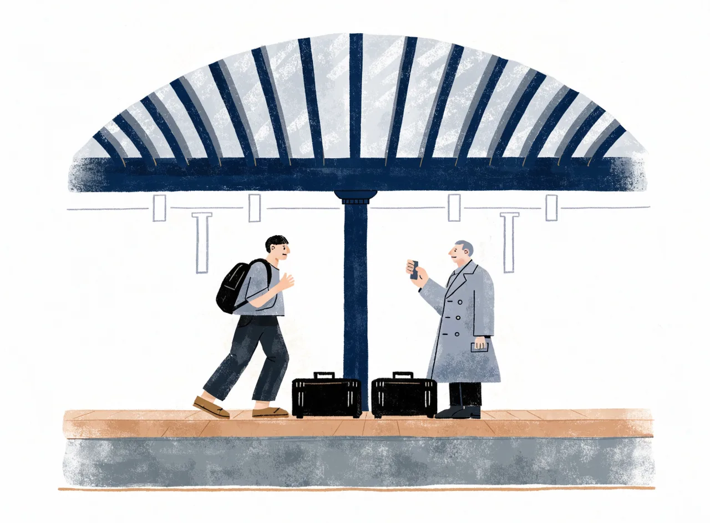
1a 그림을 보고 한국어로 추측해 보세요.
- 젊은 남자는 누구일까요? 어디에서 왔을까요?
- 가방 두 개가 똑같네요. 무슨 일이 생길까요?
1b 여러분이 아는 독일어 인사말을 모두 말해 보세요. Hallo · Guten Tag · Entschuldigung …?
2 · Teil A · Am Bahnhof 15분
Track 1-01 기차 문이 열리고 사람들이 쏟아져 나옵니다.
(쿵! 민준이 검은 가방을 든 노신사와 부딪친다. 두 가방이 바닥에 넘어진다.)
(두 사람이 서둘러 가방을 집어 든다. 노신사는 사람들 사이로 사라진다.)
| 표현 | 뜻 |
|---|---|
| Entschuldigung! | 죄송합니다! / 실례합니다! |
| Kein Problem. | 괜찮아요. (문제없어요.) |
| Herzlich willkommen! | 진심으로 환영해! |
| Wie geht's? – Und dir? | 잘 지내? – 너는? |
| Mir geht's gut. | 나는 잘 지내. |
| ein bisschen müde | 조금 피곤한 |
| # | 문장 | r | f |
|---|---|---|---|
| 1 | Ein Mann sagt: „Entschuldigung!“ | ||
| 2 | Jonas holt Minjun am Bahnhof ab. (Jonas가 민준을 역에서 맞이한다.) | ||
| 3 | Minjun ist sehr müde. | ||
| 4 | Jonas geht es gut. |
A2 짝과 대화를 읽고, 자기 이름과 기분으로 바꿔 다시 해 보세요.
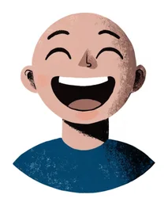 Sehr gut! | Gut. | 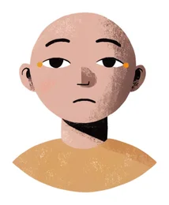 Es geht. | Nicht so gut. | 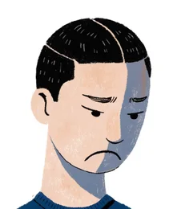 Schlecht. |
3 · Teil B · In der WG 15분
Track 1-02 WG에 도착하자 Lena가 부엌에서 나옵니다.
(민준이 가방을 연다. …잠깐.)
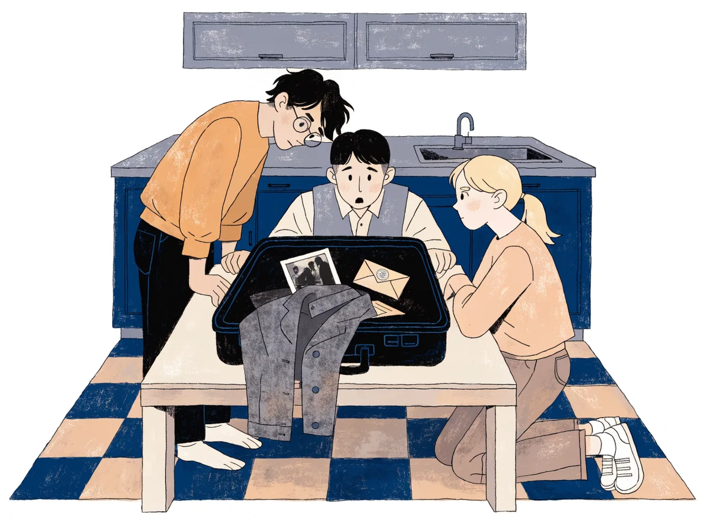
Im Koffer · 가방 속에는…
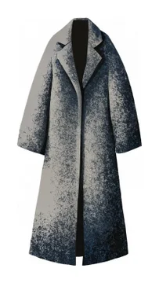
der Mantel낡은 회색 외투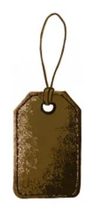
der Kofferanhänger이름표: T. S. – 전화번호는 반쯤 지워짐B3 가방의 주인은 누구일까요? 한국어로 한 줄 추리해 보세요.
| 표현 | 뜻 |
|---|---|
| Moin! | 안녕! (북독일, 특히 함부르크식 인사 – 하루 종일 사용) |
| Freut mich! | 반가워! |
| Ich möchte … studieren. | …에서 공부하고 싶어. (3과에서 자세히. 지금은 통째로!) |
| Das ist nicht mein Koffer! | 이건 내 가방이 아니야! |
| Minjun | Lena | Jonas | |
|---|---|---|---|
| Woher? | |||
| Was macht er/sie? |
- Wie heißt du? →
- Woher kommst du? →
- Was machst du hier? →
- Welche Sprachen sprichst du? →
a Aus Hamburg. · b Ich studiere Medizin. · c Koreanisch und Englisch. · d Ich heiße Minjun.
4 · Grammatik ① · 동사는 주어에 따라 모양이 바뀐다! 15분
| kommen (오다) | heißen (이름이 ~이다) | studieren (대학에서 공부하다) | |
|---|---|---|---|
| ich | Ich komm aus Südkorea. | Ich heiß Minjun. | |
| du | Woher komm du? | Wie heiß du? | |
| er/sie | Jonas studier Informatik. |
② 규칙 정리 — 동사 = 어간(Stamm) + 어미(Endung)
| 주어 | 뜻 | 어미 | wohnen (살다) | lernen (배우다) | kommen (오다) |
|---|---|---|---|---|---|
| ich | 나 | -e | wohne | lerne | komme |
| du | 너 | -st | wohnst | lernst | kommst |
| er / sie / es | 그 / 그녀 / 그것 | -t | wohnt | lernt | kommt |
| wir | 우리 | -en | wohnen | lernen | kommen |
| ihr | 너희 | -t | wohnt | lernt | kommt |
| sie / Sie | 그들 / 당신(들) | -en | wohnen | lernen | kommen |
주의할 동사
- heißen: du heißt (✗ heißst) – 어간이 ß로 끝나서 s를 또 붙이지 않아요.
- arbeiten (일하다): du arbeitest, er arbeitet – 어간이 -t로 끝나면 e를 넣어요.
- sprechen (말하다): du sprichst, er spricht – e가 i로 바뀌어요. (3과에서 더!)
5 · Übungen · 동사 연습 20분
- Ich (wohnen) in Leipzig.
- Lena (kommen) aus Hamburg.
- Woher (kommen) du?
- Wir (lernen) Deutsch.
- Jonas (studieren) Informatik.
- Was (machen) ihr hier?
- Priya (sprechen) Hindi.
- Wie (heißen) du?
주사위를 던져 나온 주어로 동사를 바꿔 문장을 말하세요. 맞으면 1점! (진짜 주사위가 없으면 아래 버튼으로)
| ich | du | er / sie | wir | ihr | sie / Sie |
예: + kommen → „Du kommst aus Korea.“
6 · Aussprache · 발음 15분
Track 1-08 한국어 화자가 특히 조심해야 할 소리
| 철자 | 발음 | 예 | 요령 |
|---|---|---|---|
| w | [v] | Wie, wohnen | 윗니로 아랫입술을 살짝 물고 “ㅂ”. 영어 w(우)가 아니에요! |
| z | [ts] | zwei, zehn | 짧고 날카로운 “츠” |
| j | [j] | Ja, Jonas | 영어 y처럼 “야, 요” |
| ei | [ai] | heißen, drei | “아이” |
| ie | [iː] | Wie, vier | 길게 “이—” |
| -er (끝) | [ɐ] | Lehrer, Leipziger | 약하게 “어/아”. “르”를 굴리지 마세요. |
dr · vr · hßen · W · S · fr
6b 빠르게 세 번! Zwei Zwerge zählen zwanzig Zebras.
7 · Sprechen · 첫 만남 대화 15분
7a (8분) 책을 덮고 짝과 Teil B 같은 첫 만남 대화를 하세요. 짝을 두 번 바꿔서!
Hallo! Ich bin … – Wie heißt du? – Woher kommst du? – Was machst du? – Sprichst du …?
7b (7분) 두세 팀이 반 앞에서 발표 → 들은 사람은 동사 어미가 틀린 곳을 찾아 주세요.
1차시 숙제 (60분)
| # | 할 일 | 시간 |
|---|---|---|
| 1 | H1 동사 변화표 직접 쓰기 (아래에서 바로 채점 가능) | 15분 |
| 2 | H1+ Teil B 대화를 공책에 옮겨 쓰고, 이름·출신·하는 일을 바꿔 나만의 대화 만들기 | 15분 |
| 3 | Track 1-01, 1-02 따라 읽기(Shadowing) – 들으며 3번, 혼자 2번 | 15분 |
| 4 | 단어장의 인사와 작별 · 동사 외우기 | 15분 |
| machen | heißen | arbeiten | sprechen | |
|---|---|---|---|---|
| ich | ||||
| du | ||||
| er/sie/es | ||||
| wir | ||||
| ihr | ||||
| sie/Sie |
Der erste Kurstag
복습 5분
숙제 H1 확인 + 이름 릴레이: 원으로 앉아 „Ich heiße … Und wie heißt du?“를 차례로 이어 가기.
8 · Teil C · In der Sprachschule 15분
Track 1-03 다음 날 아침, 어학원 Sprachschule Leipzig. 첫 수업입니다.
(옆자리 남자가 말을 건다.)
| 표현 | 뜻 |
|---|---|
| Wie bitte? | 뭐라고요? / 다시 말씀해 주시겠어요? |
| Können Sie das bitte buchstabieren? | 철자를 말씀해 주시겠어요? |
| Herr Park / Frau Wagner | 박 씨(남) / 바그너 씨(여) – 성(姓)과 함께 |
| Ich auch! | 나도! |
| Alles in Ordnung? | 괜찮아요? |
| ein Krimi | 추리 소설, 범죄 드라마 |
여성형은 대부분 -in: Student → Studentin, Lehrer → Lehrerin (Arzt → Ärztin)
- ist Koch und kommt aus Spanien.
- ist Deutschlehrerin.
- kommt aus Indien.
- ist Ingenieur.
- wohnt in einer WG.
- und möchten in Leipzig studieren.
9 · Grammatik ② · 특별한 동사 sein 10분
| ich | bin | Ich bin Minjun. |
| du | bist | Bist du Jonas? |
| er / sie / es | ist | Tomasz ist Ingenieur. |
| wir | sind | Wir sind alle neu hier. |
| ihr | seid | Seid ihr Studenten? |
| sie / Sie | sind | Das sind Tomasz und Priya. · Herr Park, Sie sind so still. |
- Ich Minjun.
- Carlos Koch.
- Wir im Deutschkurs.
- du müde?
- Frau Wagner, Sie aus Leipzig?
- Lena und Jonas, ihr Studenten?
10 · Grammatik ③ · W-의문문과 “동사는 두 번째!” 20분
| 1번 자리 | 2번 자리 (동사) | 나머지 |
|---|---|---|
| Wie | heißt | du? |
| Woher | kommen | Sie? |
| Wo | wohnen | Sie jetzt? |
| Ich | komme | aus Südkorea. |
| Ich | wohne | in Leipzig. |
규칙 — 평서문이든 W-의문문이든 동사는 항상 2번째 자리!
한국어 화자가 가장 많이 하는 실수
한국어: “나는 한국에서 왔어요.” → 동사가 맨 끝독일어: Ich komme aus Korea. /
의문사 — 탐정의 기본 도구!
| 의문사 | 뜻 | 예문 | 대답 |
|---|---|---|---|
| Wer? | 누구 | Wer ist T. S.? | Das wissen wir nicht! |
| Wie? | 어떻게 | Wie heißt du? | Ich heiße Minjun. |
| Woher? | 어디에서 | Woher kommst du? | Aus Korea. |
| Wo? | 어디에 | Wo wohnst du? | In Leipzig. |
| Was? | 무엇 | Was machst du? | Ich lerne Deutsch. |
예/아니요 의문문은 동사가 맨 앞! — Bist du Minjun? – Ja. / Sprichst du Englisch? – Ja, ein bisschen.
- du / wohnst / wo / ?
- aus / ich / Busan / komme / .
- Sie / heißen / wie / ?
- Jonas / Informatik / studiert / .
- Deutsch / du / sprichst / ?
- kommt / woher / Priya / ?
11 · du oder Sie? · 반말? 존댓말? 15분
| du (친근) | Sie (공손) | |
|---|---|---|
| 누구에게? | 가족, 친구, 아이, 대학생·젊은 사람끼리 | 처음 만난 어른, 선생님, 관청, 가게 직원 |
| 이 과에서 | Minjun ↔ Jonas, Lena, Carlos | Frau Wagner ↔ Minjun, 분실물 센터 직원 ↔ Minjun |
| 이름 | Wie heißt du? | Wie heißen Sie? |
| 출신 | Woher kommst du? | Woher kommen Sie? |
| 안부 | Wie geht's dir? | Wie geht es Ihnen? |
- 선생님께 출신을 물을 때 → Woher kommen ?
- 룸메이트에게 → Wie heißt ?
- 분실물 센터 직원에게 → Wo wohnen ?
- 반 친구에게 → Sprichst Englisch?
G4+ 🃏 역할 카드 — 교사가 카드(선생님 / 친구 / 분실물 센터 직원)를 들면, 그 사람에게 맞는 질문을 빨리 말하기!
12 · Das Alphabet · 알파벳과 철자 말하기 20분
Track 1-04 글자를 눌러 들어 보세요.
| A | B | C | D | E | F | G | H | I | J jot | K | L | M |
| N | O | P | Q | R | S | T | U | V fau | W we | X | Y üpsilon | Z tset |
| Ä | Ö | Ü | ß eszett |
한국 이름에 자주 나오는 철자: J(Jun), Y(Young), E(Eun), U(Sung)
대본 보기 (듣기가 끝난 뒤에!)
12b 짝 활동 · 자기 이름(성 + 이름)을 철자로 말해 주세요. 짝은 받아 적으세요.
13 · Rollenspiel · Im Fundbüro · 분실물 센터에서 (Sie) 15분
오후, 민준은 중앙역의 Fundbüro(분실물 센터)에 갑니다. A: 직원 / B: 민준(또는 나). 역할을 바꿔 두 번 하세요.
B: …
B: …
B: …
Wie kann ich Ihnen helfen? = 무엇을 도와드릴까요? · schwarz = 검은 · groß = 큰 · Wir rufen Sie an. = 전화 드릴게요.
A의 분실 신고서 (Verlustmeldung)
| Nachname (성) | Vorname (이름) | Land (나라) | Wohnort (사는 곳) | Koffer (가방) |
|---|---|---|---|---|
2차시 숙제 (60분)
| # | 할 일 | 시간 |
|---|---|---|
| 1 | G3 4–6번 | 5분 |
| 2 | H2 대답에 맞는 질문 쓰기 (아래) | 10분 |
| 3 | H3 분실물 센터 롤플레이를 대본으로 쓰기 (내 정보로, 8줄 이상) | 10분 |
| 4 | 철자 녹음: 내 이름 + 가족 2명의 이름을 철자로 말해 녹음해서 제출 | 10분 |
| 5 | Landeskunde 읽기 | 10분 |
| 6 | 단어장의 나라와 언어 · 사람과 직업 · 가방 사건 외우기 | 15분 |
- – Ich heiße Carlos.
- – Ich komme aus Polen.
- – Ich wohne in Leipzig. (Frau Wagner에게 묻기)
- – Ich studiere Medizin.
- – Das ist Priya.
- – Ja, ich spreche Englisch.
Wer ist T. S.?
복습 5분
숙제 확인 + 동사 퀴즈: 교사가 „wohnen – du!“ 하면 → „du wohnst!“ (sein 포함)
14 · Die Zahlen 0–20 · 숫자 15분
Track 1-06 숫자를 눌러 들어 보세요.
| 0 null | 1 eins | 2 zwei | 3 drei | 4 vier | 5 fünf | 6 sechs |
| 7 sieben | 8 acht | 9 neun | 10 zehn | 11 elf | 12 zwölf | |
| 13 dreizehn | 14 vierzehn | 15 fünfzehn | 16 sechzehn | 17 siebzehn | 18 achtzehn | 19 neunzehn |
| 20 zwanzig | ||||||
전화할 때는 2(zwei)를 3(drei)과 구별하려고 zwo라고도 해요.
| 이름 | Handynummer |
|---|---|
| Minjun Park | 0176 – |
| Carlos Ruiz | 0157 – |
| Priya Sharma | 0152 – |
대본 보기 (듣기가 끝난 뒤에!)
T. S. · Tel.: – ▓▓ ▓▓▓
이 사람은 어느 도시에 살까요? →
대본 보기 (듣기가 끝난 뒤에!)
14c 짝 활동 · 상상의 전화번호를 만들어 서로 받아 적으세요.
15 · Lesen · 우리 반 친구들 15분
Frau Wagner가 교실 벽에 반 친구들의 Steckbrief(프로필)를 붙였습니다.
31 Jahre alt = 31살 · von Beruf = 직업이 · schwer = 어려운 · gern = 즐겨 · denn = 왜냐하면 · ich suche einen Mann mit einem schwarzen Koffer = 검은 가방을 가진 남자를 찾고 있어요
| # | 문장 | r | f |
|---|---|---|---|
| 1 | Carlos kommt aus Spanien. | ||
| 2 | Priya ist Ärztin. | ||
| 3 | Tomasz spricht Russisch. | ||
| 4 | Tomasz lernt nicht gern Grammatik. | ||
| 5 | Minjun möchte in Leipzig studieren. |
- Hindi →
- Russisch →
- Spanisch →
- Koreanisch →
16 · Sprechen · 교실 인터뷰 15분
교실을 돌아다니며 최소 4명에게 묻고 표를 채우세요. (du 사용!)
| Name | Woher? | Wo wohnt er/sie? | Sprachen? |
|---|---|---|---|
Redemittel · 꼭 필요한 표현
| 상황 | du | Sie |
|---|---|---|
| 인사 | Hallo! / Hi! / Moin! | Guten Morgen! / Guten Tag! / Guten Abend! |
| 작별 | Tschüss! / Bis morgen! / Bis bald! | Auf Wiedersehen! |
| 이름 | Wie heißt du? – Ich heiße … / Ich bin … | Wie heißen Sie? – Mein Name ist … |
| 못 알아들었을 때 | Wie bitte? / Noch einmal, bitte. / Langsam, bitte. | |
17 · Sprachmittlung · Im Treppenhaus · 계단에서 10분
Track 1-10 저녁, Kochstraße 12. 계단에서 이삿짐을 옮기는 여자와 여자아이를 만난 민준이 상자 하나를 들어 줍니다.
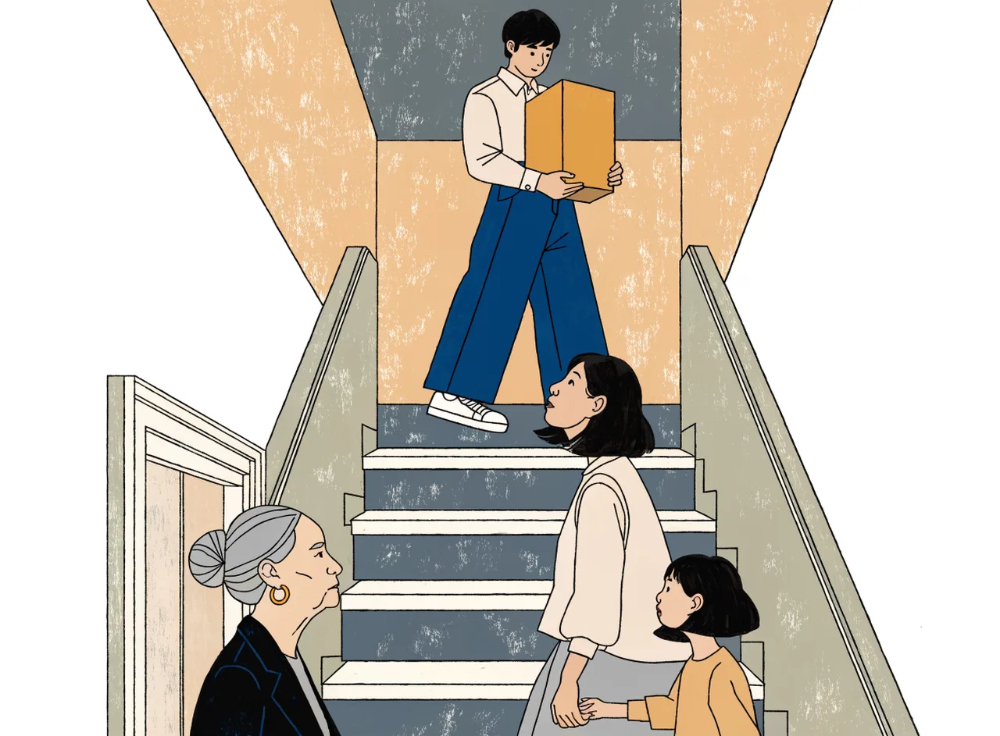
(1층 문이 열리고 할머니가 나온다.)
(웃지 않고 문을 닫는다.)
(잠시 후, WG 부엌)
Das ist . Sie kommt aus . Sie wohnt jetzt . Das Mädchen ist . Sie spricht schon !
17b 짝 활동 · Jonas가 하나 더 묻습니다: „Und Frau Schulze? Wer ist das?“ – 아는 만큼 독일어로 대답해 보세요. (Sie wohnt … / Sie sagt … / Sie lacht …)
다른 사람을 소개할 때는 er/sie 형태! → sie kommt, wohnt, spricht
18 · Schreiben · 나를 소개하는 글 35분
과제 — 민준처럼 반 벽에 붙일 Steckbrief를 쓰세요. (5–6문장)
① 이름 ② 출신 ③ 사는 곳 ④ 하는 일 ⑤ 언어 ⑥ (선택) 독일어를 배우는 이유
① 모범 답안 분석 (5분) — 동사에 동그라미, 명사에 밑줄을 그어 보세요.
Hallo! Ich heiße Jiwoo Kim. Ich komme aus Südkorea, aus Incheon. Ich wohne jetzt in Seoul. Ich bin Studentin und studiere Informatik. Ich spreche Koreanisch, Englisch und ein bisschen Deutsch. Ich lerne Deutsch, denn ich möchte in Deutschland arbeiten.
② 직접 쓰기 (20분)
③ 짝 첨삭 (10분) — 짝과 글을 바꿔 아래 체크리스트로 확인하고, 틀린 곳에 연필로 표시해 주세요. 돌려받으면 스스로 고치기!
첨삭 체크리스트
| ☐ | 동사 위치 | 모든 문장에서 동사가 두 번째인가요? |
| ☐ | 동사 어미 | ich → -e (ich komme, ich wohne)로 썼나요? |
| ☐ | 대문자 | 명사와 문장 첫 글자를 대문자로 썼나요? (Student, Deutsch, Informatik) |
| ☐ | 직업 | 직업 앞에 ein을 빼고 썼나요? |
| ☐ | aus / in | 출신은 aus, 사는 곳은 in인가요? |
→ 자주 하는 실수
| 틀린 문장 | 고친 문장 | 이유 |
|---|---|---|
| Ich | Ich heiße Minjun. / Ich bin Minjun. | heißen과 sein을 함께 쓰지 않아요. |
| Ich aus Korea komme. | Ich komme aus Korea. | 동사는 2번째 자리! |
| Ich komme | Ich komme aus Korea. | 출신 = aus |
| Ich bin | Ich bin Student. | 직업 앞 관사 X, 명사는 대문자 |
| Ich spreche | Ich spreche Koreanisch. | 언어 이름도 명사 → 대문자 |
| Ich wohnen in Seoul. | Ich wohne in Seoul. | ich → -e |
마무리 5분
3차시 숙제 (60분)
숙제와 복습용
Landeskunde · 독일 생활 팁 (2차시 숙제)
1. “안녕하세요”는 지역마다 달라요
| 지역 | 인사 |
|---|---|
| 독일 전체 (표준) | Guten Tag! / Hallo! |
| 북독일 (함부르크 등) | Moin! / Moin moin! |
| 남독일·오스트리아 | Grüß Gott! / Servus! |
| 스위스 | Grüezi! |
→ 그래서 함부르크 출신 Lena는 “Moin!”이라고 인사했어요.
2. du와 Sie, 언제 바꿀까?
대학생, WG, 스포츠 동호회에서는 처음부터 du를 쓰는 경우가 많아요. 직장이나 관청에서는 Sie가 기본. 상대가 „Wir können uns duzen.“(우리 말 놓아요)이라고 하면 du로 바꿔요. 보통 나이가 많거나 지위가 높은 사람이 먼저 제안합니다. 나이 많은 이웃에게는 Sie가 안전해요 – Frau Schulze처럼요!
3. 물건을 잃어버렸다면? – Fundbüro
기차나 역에서 잃어버린 물건은 Deutsche Bahn의 분실물 센터(Fundservice)에 신고해요. 시내나 트램에서 잃어버렸다면 시청의 Fundbüro로! 신고할 때는 이름·연락처·물건의 특징(색깔, 크기)을 말해야 해요.
4. 라이프치히(Leipzig)는 어떤 도시?
- 독일 동부 작센(Sachsen)주에서 가장 큰 도시, 인구 약 60만 명
- 1409년에 세워진 라이프치히 대학은 독일에서 가장 오래된 대학 중 하나
- 1989년 평화 혁명의 중심지. 그 중심에 니콜라이 교회가 있어요. (→ 5과에서 민준이 찾아갈 곳!)
- 민준이 도착한 중앙역(Hauptbahnhof)은 면적으로 유럽에서 가장 큰 기차역 중 하나 – 가방이 바뀌기 딱 좋은 곳이죠.
Grammatik auf einen Blick · 1과 문법 총정리
① 동사 현재형
| ich | -e | wohne | bin |
| du | -st | wohnst | bist |
| er/sie/es | -t | wohnt | ist |
| wir | -en | wohnen | sind |
| ihr | -t | wohnt | seid |
| sie/Sie | -en | wohnen | sind |
주의: du heißt · du arbeitest · du sprichst
② 어순 – 동사는 2번!
평서문 · W-질문: 동사 2번 / 예·아니요 질문: 동사 1번 / 다른 말이 1번이면 주어는 동사 뒤
③ du와 Sie
Wie heißt du? · Wie heißen Sie?
친구·가족·학생끼리 du / 처음 만난 어른·선생님·관청 Sie (대문자, 동사 -en)
④ 의문사
Wer? · Wie? · Woher? → aus · Wo? → in · Was?
⑤ 미리 본 표현 (뒤에서 자세히)
- Ich möchte … studieren. → 3과
- Das ist nicht mein Koffer. → 2과 (kein)
- der die das 명사의 성 → 2과
- Der Koffer? – Er ist schwarz. → 7과
- Ihre Lehrerin · Mir geht's gut. → 2과 · A2
Wortschatz · 단어장 (▶를 눌러 발음 듣기)
인사와 작별
| Hallo! / Guten Morgen! / Guten Tag! / Guten Abend! | 안녕! / 좋은 아침이에요 / 안녕하세요 / 좋은 저녁이에요 |
| Tschüss! / Auf Wiedersehen! | 안녕(작별) / 안녕히 계세요·가세요 |
| Bis morgen! / Bis bald! | 내일 봐! / 곧 봐! |
| Wie geht's? / Wie geht es Ihnen? | 잘 지내? / 어떻게 지내세요? |
| Freut mich. | 반가워요. |
| Danke schön. / Bitte. | 고마워요. / 천만에요, 부탁해요. |
| Entschuldigung! / Kein Problem. | 죄송합니다! / 괜찮아요. |
동사
| sein | ~이다 | heißen | 이름이 ~이다 |
| kommen (aus) | (~에서) 오다 | wohnen (in) | (~에) 살다 |
| lernen | 배우다 | studieren | 대학에서 공부하다 |
| machen | 하다 | arbeiten | 일하다 |
| sprechen | 말하다 | buchstabieren | 철자를 말하다 |
나라와 언어
| Land | Sprache | Land | Sprache |
|---|---|---|---|
| Südkorea | Koreanisch | Deutschland | Deutsch |
| Spanien | Spanisch | Polen | Polnisch |
| Indien | Hindi | England | Englisch |
| China | Chinesisch | Japan | Japanisch |
| Frankreich | Französisch | Vietnam | Vietnamesisch |
사람과 직업
| der Student / die Studentin | 대학생 |
| der Lehrer / die Lehrerin | 선생님 |
| der Koch / die Köchin | 요리사 |
| der Ingenieur / die Ingenieurin | 엔지니어 |
| der Informatiker / die Informatikerin | 정보학자, IT 전문가 |
| Herr … / Frau … | ~씨(남) / ~씨(여) |
가방 사건
이번 과 이야기 · 3컷으로 다시 보기
말해 보기 그림을 보면서 짝에게 이번 과의 이야기를 독일어로 말해 보세요. (Minjun kommt aus … · Das ist nicht … · Das ist Sujin. Sie …)
Minjuns Tagebuch · 민준의 일기
30. September
Ich bin in Leipzig! Aber … das ist nicht mein Koffer!
Im Koffer sind ein Mantel, ein Foto und ein Brief. Auf dem Brief steht: „Für E.“ Auf dem Koffer steht: „T. S.“
Jonas sagt: „Das ist ein Fall für uns!“ Lena lacht.
Heute ist mein erster Tag im Deutschkurs. Frau Wagner ist nett. Carlos, Tomasz und Priya sind auch neu hier.
Im Haus wohnt jetzt auch eine Familie aus Korea: Sujin und Haeun. Haeun spricht schon Deutsch!
Unten wohnt Frau Schulze. Sie sagt nicht „Hallo“, sie sagt nur „Guten Tag“. Sie lacht nicht.
Wer ist T. S.? Und wer ist E.?
Auf dem Brief steht … = 편지 위에 …라고 적혀 있다 · der Fall = 사건 · lacht = 웃는다 · nett = 친절한 · im Haus = 건물에 · unten = 아래층에 · schon = 벌써
→ 다음 과 예고 · Kapitel 2: Meine WG, meine Familie
가방 속 물건을 하나씩 살펴보는 민준과 친구들. 그리고 수진 가족의 새집에서는 작은 손 하나가 테이블 위의 종이를 집어 드는데…
Fallakte · 사건 수첩 (3차시 숙제 · 이 기기에 자동 저장)
아는 것만 독일어로 쓰세요. 모르는 칸은 비워 두세요 – 이야기가 진행되면서 채워집니다!
| Der Koffer ist … | |
|---|---|
| Im Koffer sind … | |
| Der Brief ist für … | |
| Der Mann heißt … (T. S.) | |
| Tel.: 040 … → Er kommt vielleicht aus … | |
| Wer ist E.? |
Meine Idee (나의 추리 · 독일어 또는 한국어)
Das kann ich! · 자기 점검
| Ich kann … | |||
|---|---|---|---|
| 인사하고 안부를 물을 수 있다. | |||
| 이름·출신·사는 곳·언어로 나를 소개할 수 있다. | |||
| du와 Sie를 구분해서 질문할 수 있다. | |||
| 내 이름 철자를 말할 수 있다. | |||
| 0–20 숫자와 전화번호를 말할 수 있다. | |||
| 한국어로 들은 내용을 독일어로 짧게 전할 수 있다. | |||
| 규칙 동사와 sein을 주어에 맞게 바꿀 수 있다. | |||
| 짧은 자기소개 글을 쓸 수 있다. |